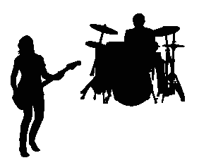
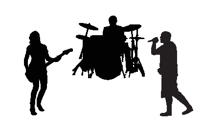

Automatic Sung Speech Recognition from Single Channel Music Recordings
Presentation Outline
- Project Description
Project Description
Aims
To automatically recognise the sung speech from a single channel music recording by analysing robust spoken speech technologies and adapting them by exploiting musical information from both the background accompaniment and the sung speech.
Project Description
Breaking down the task
- Clean sung speech recognition.
- Musical audio source separation.
- Polyphonic lyrics transcription.
Project Description
Breaking down the task
- Clean sung speech recognition.
- Musical audio source separation.
- Polyphonic lyrics transcription.

Project Description
Breaking down the task
- Clean sung speech recognition.
- Musical audio source separation.
- Polyphonic lyrics transcription.

Project Description
Research Questions - Acoustic Modelling
- In what ways is sung speech acoustic modelling more challenging than spoken speech modelling, and how should these challenges be best addressed?
- How does the production of sung speech differ from that of spoken speech? What are the implications of the differences for the phoneme discrimination that underpins speech recognition?
- How well does the existing state-of-the-art for speech recognition perform on the sung speech task? What datasets and techniques can be used to measure this performance? What can we learn about how to adapt acoustic modelling techniques by examining the pattern of errors produced by these techniques?
- What are the musical properties that can be used to characterise a sung speech signal? How can we best capture these properties when designing sung speech feature vectors? To what extent does modelling these properties improve speech recognition performance?
- How does the production of sung speech differ from that of spoken speech? What are the implications of the differences for the phoneme discrimination that underpins speech recognition?
- How well does the existing state-of-the-art for speech recognition perform on the sung speech task? What datasets and techniques can be used to measure this performance? What can we learn about how to adapt acoustic modelling techniques by examining the pattern of errors produced by these techniques?
- What are the musical properties that can be used to characterise a sung speech signal? How can we best capture these properties when designing sung speech feature vectors? To what extent does modelling these properties improve speech recognition performance?
Overview of the project
Research Questions - Stage 2
- Given that suitable training databases are small by modern ASR standards. How can a singing enhancement DNN approach be trained to obtain a high-quality singing segment suitable for ASR task?
- Can musically motivated features to be used to increase the performance of the DNN singer enhancement model?
- Can the singing enhancement model be extended also to recover the background accompaniment?
- Given the background accompaniment, are there useful musically motivated features that can be exploited for acoustic modelling?
Overview of the project
Research Questions - Stage 3
- Given the source separation and the ASR system, can they be joined in a single system?
- Is there an advantage to jointly optimising the separation and ASR stages, compared to training them as separated systems?
Presentation Outline
- Overview of the project
- Stage 1
- Stage 2
- Plan next 18 months